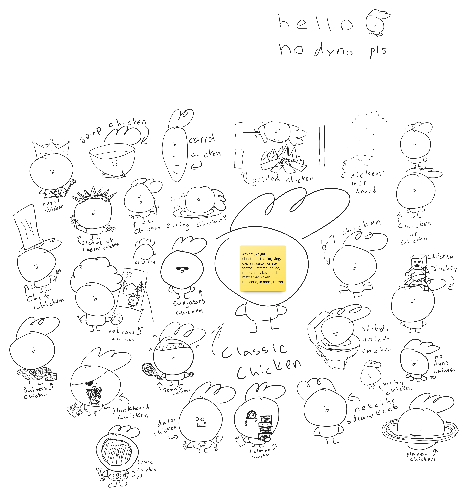

Welcome to the Everything Chicken Mural!
Here's the whiteboard of the Everything Chicken Mural. Be sure to check back later to see more chickens! Scroll down to submit your ideas so i can draw it.
CHANGELOG: Added Knight, Mushroom, and Radish
THE FORMS IS NOT A PLACE TO ASK ME RANDOM QUESTIONS. PLEASE DO NOT SPAM OR YOU COULD GET IN TROUBLE.
© Copyright 2025 Kaichen Wang

Submit Your Chicken Mural Idea!